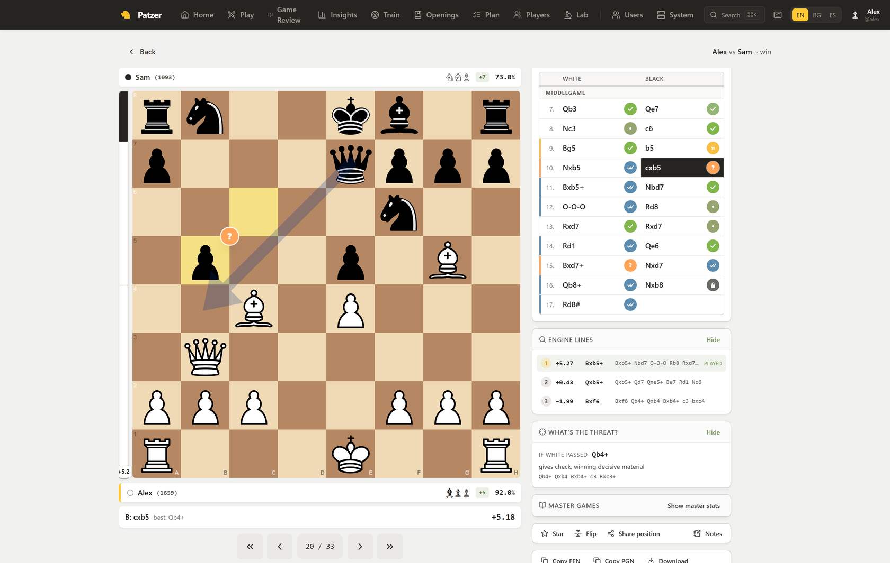
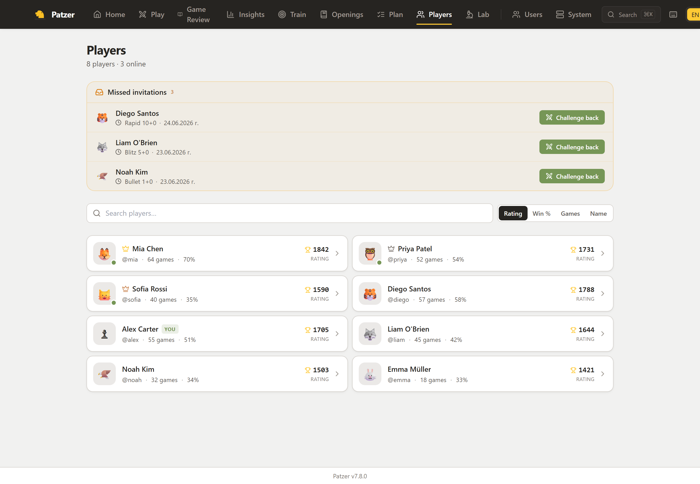

Your private Chess.com.
Self-hosted, AI-coached, family-friendly.
Stockfish + your own LLM (Ollama, LM Studio or vLLM), in one Docker container. Your games never leave home.


One command, five minutes, no cloud, no telemetry, no upsell.

Why Patzer
A tiny, self-hosted take on the Chess.com / Lichess workflow you actually use.
Game Review
Pull your public Chess.com or Lichess games (or paste a PGN), analyze with bundled Stockfish, and get chess.com-style classifications, accuracy, estimated Elo, eval graph, key moments, top engine lines and a "What's the threat?" probe.
AI Coach — your LLM
Point at any Ollama, LM Studio or vLLM host (or DeepSeek). A coach, not a commentator: it explains why a move works or fails, shows the better move, and connects the mistake to your own recent games. It never contradicts the engine.
Play vs Bot & Friend
Seven Stockfish tiers (Kid → max), all time controls, up to six premoves, kid-mode blunder warnings — plus real-time PvP between profiles on the same server with draw offers, takebacks and one-click rematch.
Family-ready
Multi-user with admin console, per-profile language (English, Bulgarian, Spanish, German, Russian, Ukrainian, French), kid-mode blunder warnings and "horsey" piece names for the youngest profiles. Open, invite-only or closed sign-up.
Learn & openers
69 interactive lessons in four levels, plus an opening trainer: drill 16 built-in main lines or your own repertoire; the moves you miss come back in a daily review queue.
Your games stay home
One Docker container (amd64 or arm64) on a Pi, NAS or old laptop. No cloud, no telemetry, no upsell. It even checks GitHub every six hours and tells you when a newer release is out.

Compared to alternatives
The only self-hosted option with a bring-your-own-LLM coach.
| Patzer | Lichess Studio | Chess.com Review | Aimchess | |
|---|---|---|---|---|
| Self-hosted | ✅ | ❌ | ❌ | ❌ |
| LLM coach (BYO model) | ✅ | ❌ | ❌ | ❌ |
| Imports Chess.com | ✅ | ❌ | ✅ | ✅ |
| Imports Lichess | ✅ | ✅ | ❌ | ✅ |
| Multi-user / family | ✅ | ❌ | ❌ | ❌ |
| Multilingual coach | ✅ | partial UI | ❌ | ❌ |
| Free | ✅ | ✅ | 💳 | 💳 |
First run in five minutes
Pick one. The Docker options open localhost:8800; the first visit walks you through a setup wizard.
docker compose
Prefer compose? The docker-compose.yml in the repo is the whole deployment — add the Watchtower label and your box tracks releases by itself.
Try it in your browser
Open in GitHub Codespaces spins up a temporary environment with Patzer + Stockfish pre-installed — the full app, no install, in about a minute.
Nix
On NixOS or with Nix installed, nix run github:SikamikanikoBG/patzer brings Node.js and Stockfish with it. See the Nix guide.
The AI Coach needs an Ollama, LM Studio or vLLM host on your network (or the hosted DeepSeek API); Game Review on your own games needs a Chess.com or Lichess username. Everything else works out of the box.